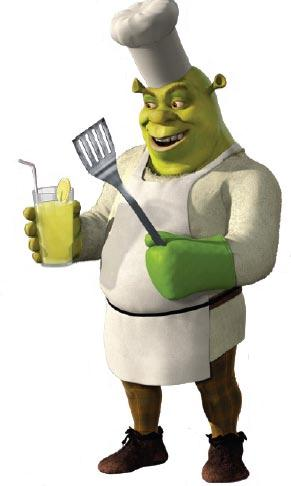
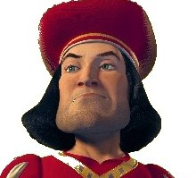
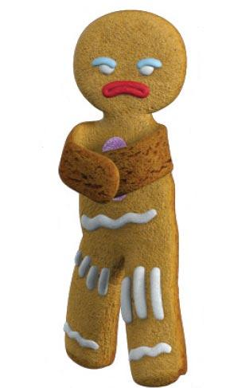

Shrektastic! by blindmouseone

Shrek a large, green, physically intimidating ogre, with an accent described by Mike Myers as "a Scottish guy who's lived in Scarborough for 40 years". Even though his background is something of a mystery, in the musical, it is revealed that on his seventh birthday Shrek was sent away by his parents because it was an ogre tradition (like in the book where his parent send him away). He is seen traveling alone, either being screamed at or teased by passers-by. The only time he receives a pleasant greeting is a wave from a young Fiona, who is promptly led away by her parents. After scaring away an angry mob, he arrives at his swamp, enters an outhouse and literally breaks out as the adult Shrek. Though surly, misanthropic, and venomously cranky, Shrek is peaceful and doesn't care to hurt anyone, but he just wants to live his life in solitude and be left alone. Shrek is befriended by Donkey, an excitable, hyperactive, and talking donkey.
My Shrek Characters
| Character | Type | Picture | Habits |
|---|---|---|---|
| Shrek | Hero |

|
Swamp dweller. Snake inflator. Peasant scarer. |
| Lord Farquaad | Villain |  | Gingerbreadman tormentor. Incurable romantic. |
| Gingerbreadman | Dubious Character |  | Fashionista (loves gumdrop buttons!) Friend of Muffin Man (who lives on Drury Lane). |
Characters
Shrek
Shrek lives in an Ogre Swamp, which is green and murky, like any other swamp. The swamp contains small and big ponds of muddy water and it also has geysers that squirt out mud.
Lord Farquaad
Lord Farquaad is the comically short-in-stature, ruthless ruler of Duloc.
In his pursuit of perfection, Farquaad attempts to rid his Kingdom of Fairy Tale creatures, offering a bounty for their capture and then exiling imprisoned creatures to Shrek's swamp.
Gingerbreadman
The Gingerbread Man, or "Gingy", is a live talking gingerbread man, and one of Shrek's friends. Based on the fairy tale The Gingerbread Man, he was created by The Muffin Man. He is small and a fast runner, making him difficult to catch.